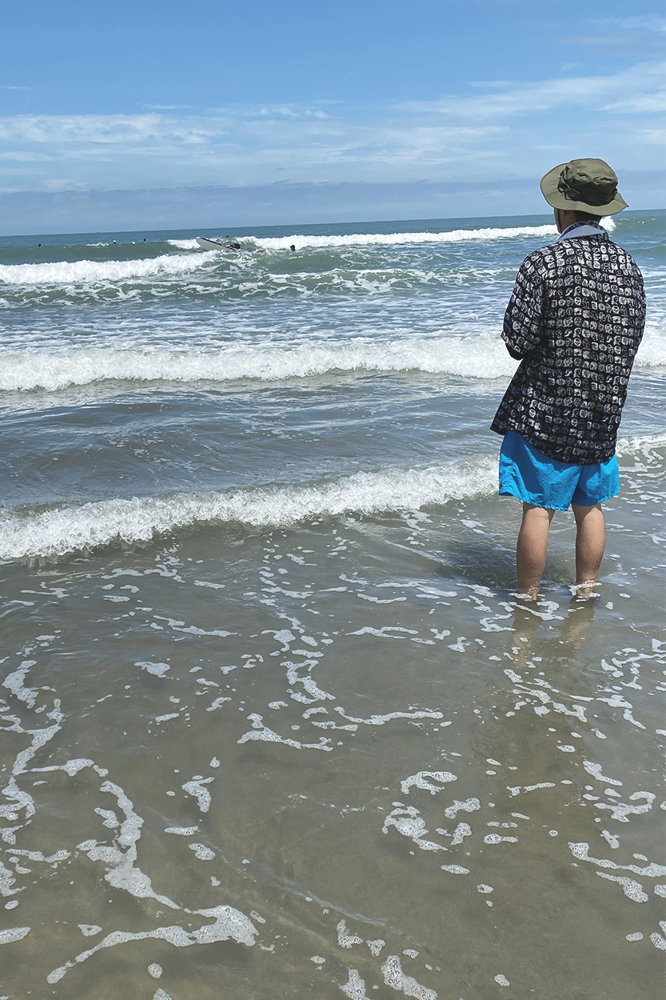

從 海 邊 的 重 新 開 始

那時候謝謝你當時不放棄的來找我，帶著我一起衝浪，帶我去看夜景，在車上聊聊彼此的感受，更懂得彼此的想法，雖然我表達得比較慢，也還好你願意慢慢聽我說，爾後才能有這些回憶的留存

然後開始一起經歷了好多第一次
從 海 邊 的 重 新 開 始
那時候謝謝你當時不放棄的來找我，帶著我一起衝浪，帶我去看夜景，在車上聊聊彼此的感受，更懂得彼此的想法，雖然我表達得比較慢，也還好你願意慢慢聽我說，爾後才能有這些回憶的留存
然後開始一起經歷了好多第一次
第一次收到的花
還記得那天對你嚷嚷訊息告白不行吧～當天晚上下班你就帶著花過來，在路邊告白也是非常doki doki，也難得成為路上擾民的情侶ＸＤ
Miaodong
是你帶著身為台中人的me第一次去的廟東,這算是開啟美食地圖的開關嗎！發現了很多不知道的隱藏美食，才發現原來台中還有這麼多地方沒有去過，之後你也帶我去了好多不知道的地方，真不愧為台中地頭蛇✦
Roving Nation Festival
第一次的音樂祭
這天一開始讓你森77了，也謝謝你後來繼續一起看完表演，跟著你才知道樂團仔可以玩得這麼瘋，衝撞真的是差點讓我粉身碎骨...也很開心看到你玩的開心的樣子，之後還有很多表演要再一起去！不論是音樂表演或是脫口秀表演～
還有.......
(´///☁///`)
謝謝你帶給我各種不同的生活體驗與回憶，希望未來能再一起體驗各種事物～